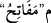
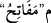

konulan birikmiş ve yerleşmiş mala denir. “ yer altında tabii olarak bulunan
madenler denir. “ Sonradan yer altına defnedilen, gömülen ve saklanan defîne ve
Sonradan yer altına defnedilen, gömülen ve saklanan defîne ve
hazinelere denir.
“Anahtarlarını güçlü kuvvetli bir topluluk zor taşırdı.” Yâni onun sâhip olduğu
hazinelerin anahtarlarını taşımak güçlü ve kuvvetli bir topluluğa ağır gelir.
“ ”; “ anlamına mevsûledir. ; “ kelimesinin çoğuludur; açacak şey,
”; “ anlamına mevsûledir. ; “ kelimesinin çoğuludur; açacak şey,
anahtar demektir. Kasdedilen; (Kârûn’a verilen malların konulduğu) sandıkların
anahtarlarıdır. “ cümlesi; “ ” in haberidir ve “
” in haberidir ve “ ” nın sılasıdır; aynı
” nın sılasıdır; aynı
zamanda bu “ nün ikinci mefülûdür. Yük ağır olup bir tarafa meylettiği zaman “ (yük onu meylettirdi)” denir. “ ” harf-i cerri, ta’diye içindir. “ ve “; büyük grub, cemaat demektir. el-Müfredât’ta der ki: “
” harf-i cerri, ta’diye içindir. “ ve “; büyük grub, cemaat demektir. el-Müfredât’ta der ki: “ ; birbirini
; birbirini
destekleyen, dayanışma içerisinde bulunan grup demektir.
İbn Abbâs (r.a.) demiştir ki: Buradaki “ kırk kişilik grubtur. Kârûn’un
hazineleri, dörtyüzbin idi. Onlardan her biri, on bin anahtar taşıyordu. Yani, onlar
anahtarları yüklenince, ağır olduğu için onları taşımak zor gelir, sağa sola meylederek
ve zorlanarak götürürlerdi.
Bazıları demiştir ki: İncil’de gördüğüme göre Kârûn’un hazinelerinin anahtarları
altmış küsûr katıra ağır gelirdi. Her bir anahtar bir parmak kadar olup, her biri bir
hazineye âiddi. Denilmiştir ki: Kârûn, her nereye gitse hazinelerinin anahtarlarını
beraberinde götürürdü. Anahtarlar demirdendi; ağır gelince ağaçtan, yine ağır gelince
sığır derilerinden parmaklar uzunluğunda anahtarlar yapardı.
“Kavmi ona şöyle demişti:” dünya malıyla “Şımarma! Bil ki Allah şımarıkları
sevmez.”
“ (Kavmi ona şöyle demişti)” cümlesi, “ (zor taşır)” fiiliyle mensubtur.
Kavim ile kasdedilen Mûsâ (a.s.) ve İsrâiloğulları’dır. Denilmiştir ki: Bu kimse sadece
Mûsâ (a.s.)’dır, o bu sözüyle Kârûn’a nasihat etmeyi kasdetmiştir. “ kelimesi,
dünya (âcile) lezzetiyle sevinmek ve onunla hoşnut olmak, anlamına gelir. Bu kavram,
daha çok bedensel geçici dünya zevkleri için kullanılır. Dünyada sevinmek genel olarak
kötülenmiştir. Zira bu sevgi, onu sevmenin ve ona râzı olmanın bir sonucu olarak ortaya
çıkmıştır. Ondaki lezzetlerin mutlaka ayrılıkla sonuçlanacağını bilmek, kesin bir
üzüntüye sebep olur. Bunun için, Allah Teâlâ buyurmuştur ki: “(Başınıza gelecek
olayları, önceden bir kitaba yazdık ki) elinizden çıkana üzülmeyesiniz ve (Allah’ın)
size verdiğiyle sevinip şımarmayasınız.” (el-Hadîd, 57/23).
Ancak şu âyetlerdeki hususlarda sevinmeye izin verilmiştir: “De ki: Allah’ın lütfu ve
rahmetiyle, işte bunlarla sevinsinler. Bu onların (dünya malı olarak)
topladıklarından daha hayırlıdır.” (Yûnus, 10/58) “O gün mü’minler de Allah’ın
yardımıyla sevineceklerdir.” (er-Rûm, 30/4)